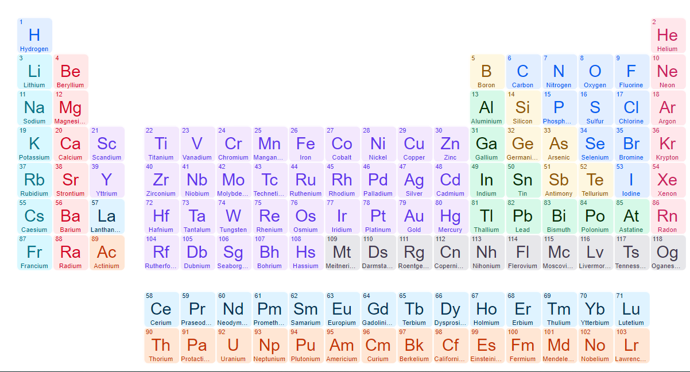

The periodic table, also known as the periodic table of (the) (chemical) elements, is a tabular display of the chemical elements. It is widely used in chemistry, physics, and other sciences, and is generally seen as an icon of chemistry. It is a graphic formulation of the periodic law, which states that the properties of the chemical elements exhibit a periodic dependence on their atomic numbers.
The table is divided into four roughly rectangular areas called blocks . The rows of the table are called periods, and vertical columns are called groups. Elements from the same group in the periodic table show similar chemical characteristics. Trends run through the period with non-metallic character (keeping their own electrons) increasing from left to right across a period, and from down to up across a group, and metallic character (surrendering electrons to other atoms) increasing in the opposite direction . The underlying reason for these trends is electron configurations of atom.The modern pedrodic table was inverted by scientist moseley by aranging the atomic number and the mass number.
he was the succersor of the mendeleev.the modern perodic table has even more limitation . he seprated the f block elements and not added in 6th and 7th period . by its the only acceptble one so every one agreed it. Because he was also used the electronic configuration for this.

befor the moseley many scientist like dobneriar and newland tryed arange the elements in the perodic manner but they have more limitation and it can't apply after the metal calcium
<